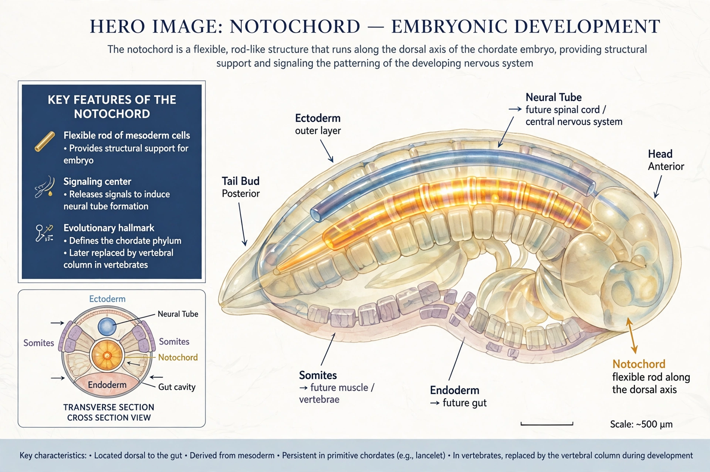

The notochord is an elastic, rod-like structure of mesodermal cells that is the defining feature of chordates. It provides skeletal support, a midline signal for development, and in vertebrates is largely replaced by the vertebral column during development.

In vertebrate embryos the notochord forms from the dorsal organiser, induces the overlying ectoderm to form the neural tube, and patterns surrounding tissues via Sonic hedgehog signalling. In humans remnants persist as the nucleus pulposus of intervertebral discs; tumours of remnants are chordomas.
The notochord persists for life in lancelets and hagfish, and in larval tunicates. It is a key synapomorphy of Chordata, alongside a dorsal nerve cord and pharyngeal slits. See Chordate, Odd-toed ungulate as vertebrate examples.